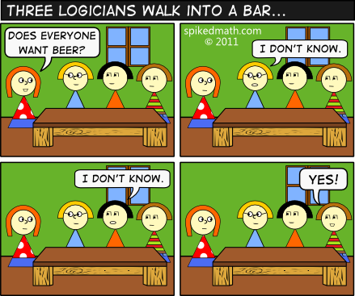
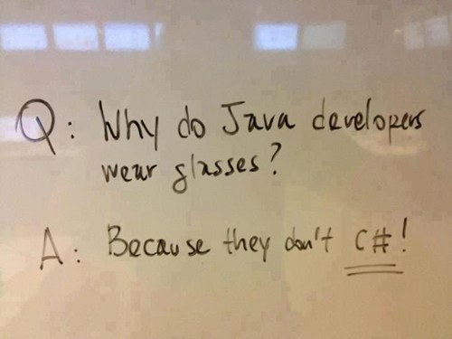
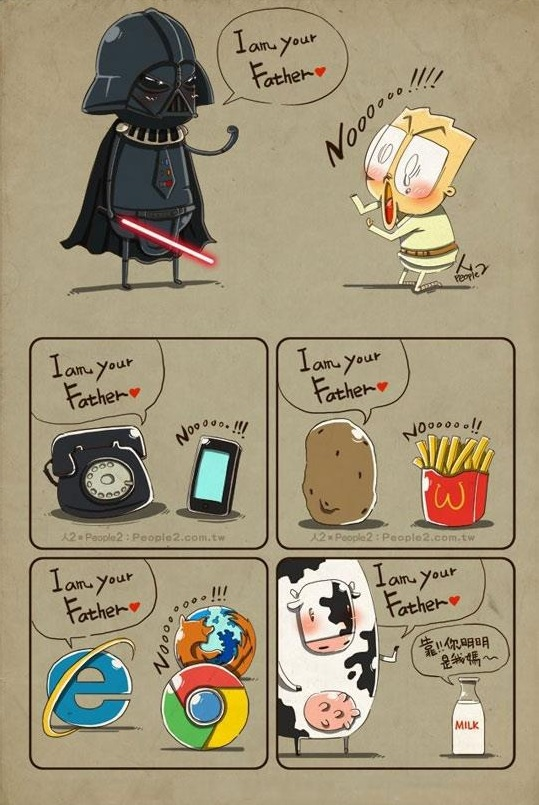
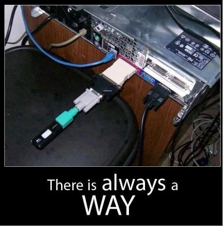
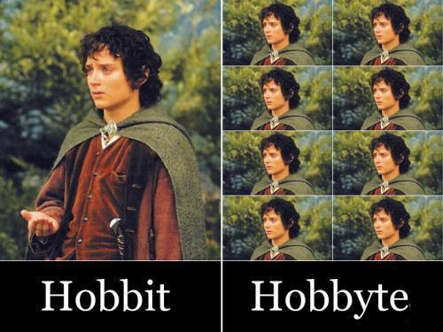
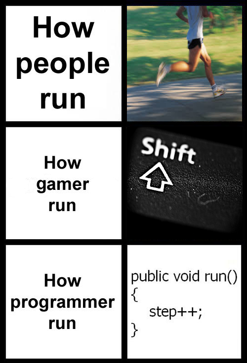
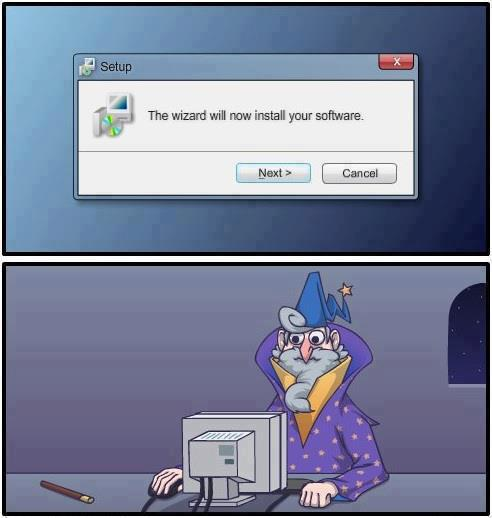

Team Bartlett Pear presents:
Ако не успяваш от първия път, значи трябва да си програмист.
Има 10 вида хора. Тези които разбират бинарната система и тези които не.
Компютърът е по-силен от молива, меча и обикновено - програмиста.
Програмирането е като секса - eдна грешка и трябва да го съпортваш до края.
Програмите и църквите си приличат доста... Първо ги строим - после се молим.
Двама програмисти си говорят:
- Чу ли, че Пентагонът поръчал на MicroSoft програмното осигуряване на най - новите си самолети?
- Да, моделът им бил такъв - трябвало да могат да увисват неподвижно във въздуха.
Срещат се двама програмисти.
- Какво си се начумерил?
- Имам си проблеми. Май ще ме уволняват - не мога да намеря общ език с шефа. . .
Другият загрижено пита:
- А C++ пробва ли?
Трима инженери и трима счетоводители пътували с влак.
- Билетът ми е невероятно скъп - казал единият счетоводител.
- Петдесет долара за такова сравнително кратко пътуване.
- Трябва да правите като нас - посъветвал го главният инженер.
- Ние тримата винаги пътуваме заедно, обаче си купуваме само един билет.
Така всеки плаща една трета от цената. Счетоводителят се озадачил.
- Но как пътувате само с един билет? Нали кондукторът ще ви хване?
- Лесна работа - отвърнал инженерът. - Само гледайте.
Кондукторът наближил техния вагон и тримата инженери се затворили в тоалетната. Когато кондукторът почукал на вратата и извикал „Билета, моля", отвътре се подала ръка, която държала билет. Кондукторът го продупчил и отминал. Счетоводителят се впечатлил и тъй като знаел едно-друго за парите, с двамата си колеги решили да опитат същия номер. Когато се случило пак да пътуват заедно, те си купили само един билет. Във влака обаче отново пътували тримата инженери и за изненада на счетоводителите, изобщо нямали билет.
- Няма да ви се размине - казали счетоводителите.
- Само гледайте - отвърнали инженерите.
Когато наближил кондукторът, двете групи се натикали в различни тоалетни. После един от инженерите почукал на вратата на счетоводителите и казал:
- Билета, моля.
Двама програмисти гледат снимката на една девойка.
Единия пита:
-Тя ли ти е първата?
–Не,нулевата ми е!
Един геймър умрял и го пратили в ада. След една седмица главният дявол бяга при Господ и реве:
- Какъв е този, дето си ми го пратил?
Господ недоумява.
- Не мога повече! Вземаи го при теб!
- Защо, бе? - пита Господ.
- Как защо! Изби всички дяволи, обърна всички казани и пита къде е изхода за другото ниво!
Производителите на програмни продукти в САЩ са направили сензационно откритие. Оказва се, че скоростта на четене на българите е хиляди пъти по-бърза от на американците. Това е станало очевидно след засичане на милисекундите, за които средния българин успява да прочете потребителското (лицензионното) споразумение и да кликне 'Съгласен'.
Преди да си легне, програмиста слага на нощното си шкафче две чаши:
Едната пълна с вода - ако през нощта му се припие вода.
Втората празна - ако през нощта не му се припие вода. :))))
Когато собственикът на Майкрософт Бил Гейтс ненадейно умрял, свети Петър му предложил да избира между рая и ада. Гейтс казал, че предпочита първо да разгледа ада и не повярвал на очите си. Там било пълно с хубавици, които унесено слушали всяка негова дума.
- Всичко е виртуално, нали? - попитал той.
- Естествено - потвърдил Свети Петър. - И няма бъгове.
- Тогава как е в рая?
- Там хората носят роби, свирят на арфи и седят върху облаци.
- Не може и да става сравнение - заявил Гейтс. - Моето място е в ада. Тук е страхотно.
След три седмици свети Петър слязъл на кратко посещение в ада. Там го очаквал разгневеният Гейтс.
- Какво е това нещо? - извикал той. - Тук е ужасно. Температурата е над сто градуса, музиката е отвратителна и е бъкано с бъгове. Къде са хубавиците, виртуалните чудеса? Къде е прекрасният ад, който ми обеща?
- А, онова беше просто демо версия - отвърнал свети Петър.






